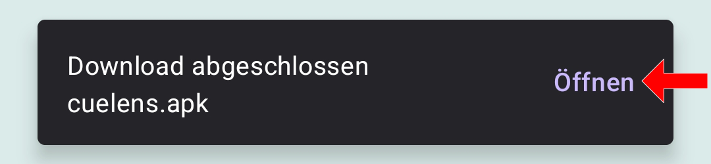
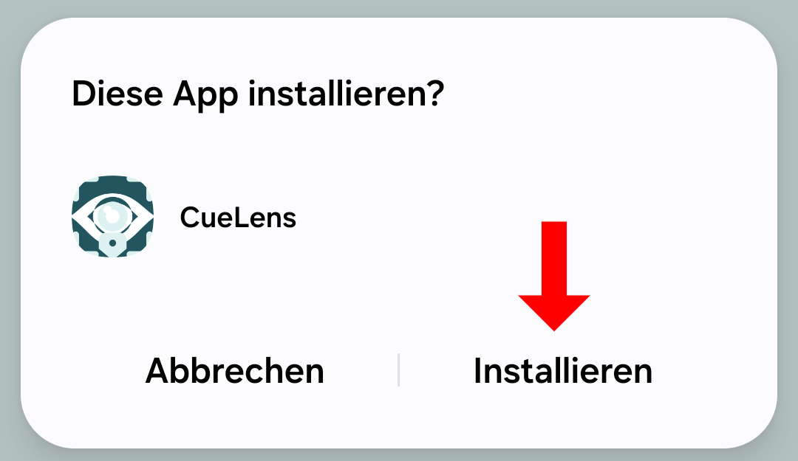
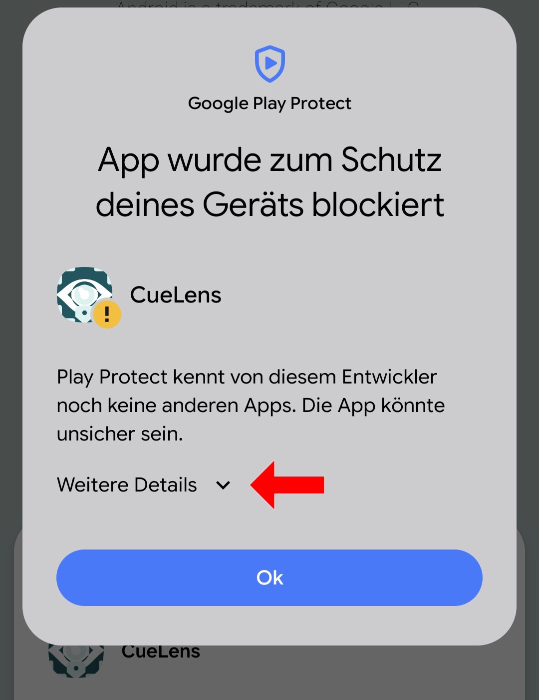
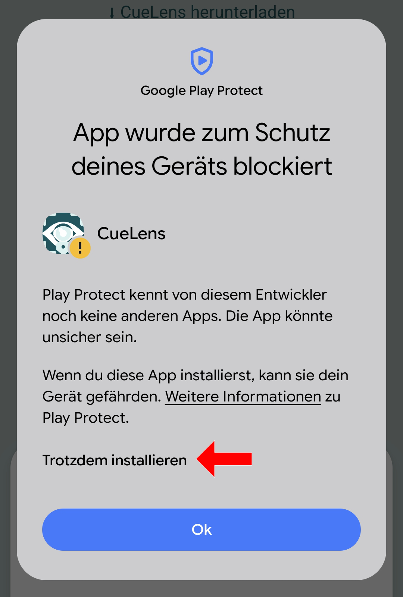
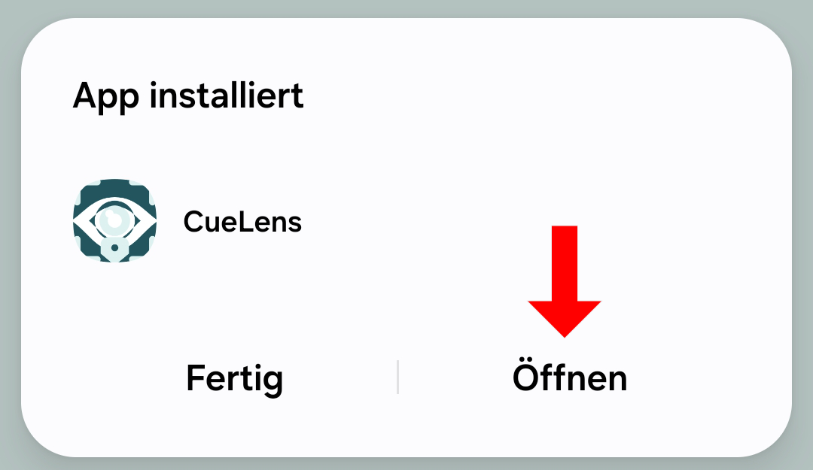

Abhängig von Browser und Android-Version können Aussehen oder Inhalt der Dialoge abweichen. Befolgen Sie gegebenenfalls die Hinweise auf Ihrem Display.
Laden Sie zuerst die App-Datei herunter:
CueLens herunterladen
APK für Android™ 7.0 oder neuer
Android is a trademark of Google LLC.
Öffnen Sie die heruntergeladene Datei:

Die Datei wird als Android-Package erkannt. Installieren Sie das Package:

Es erscheint eine Sicherheitsüberprüfung. Tippen Sie auf "Weitere Details":

Tippen Sie anschließend auf "Trotzdem installieren". Die CueLens-App ist sicher. Sollten Sie Bedenken in Bezug auf die Sicherheit Ihres Gerätes oder Ihrer Daten haben, konsultieren Sie die Studieninformation und die Datenschutzerklärung. Gern beantworten wir Ihre Fragen auch per E-Mail: cuelens@each-and-every.de.

Öffnen Sie nun die App:
